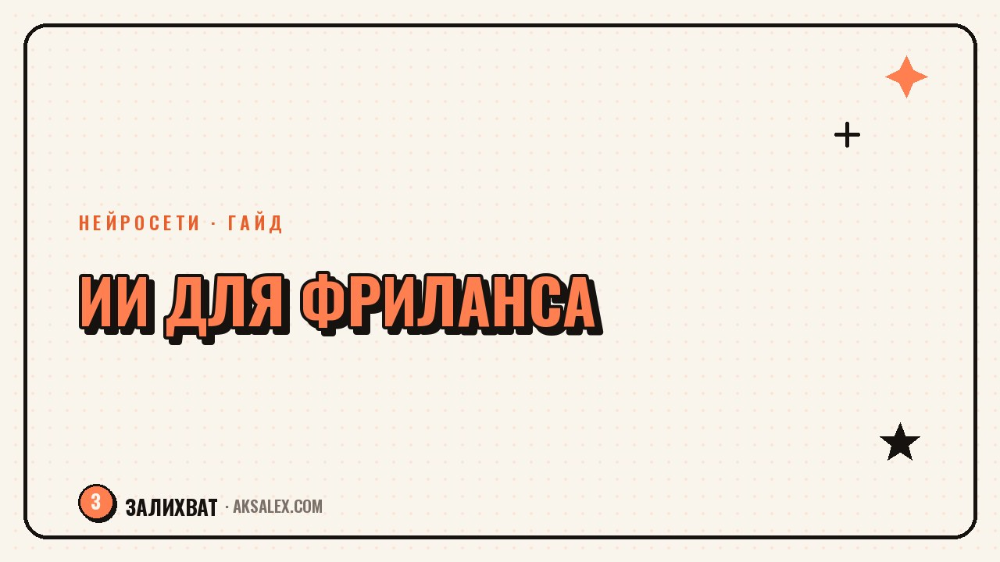

Нейросети для фриланса: заказы, сметы, переписка

У фрилансера нет отдела продаж, бухгалтерии и HR - всё это он делает сам, вперемешку с основной работой. Нейросети для фриланса чаще всего используют именно на этих задачах: не сделать проект вместо тебя, а разгрузить рутину вокруг него - отклики на заказы, расчёт сметы, переписку с клиентом. Разберём по шагам, где ИИ реально экономит время, а где решение всё равно нужно принимать самому.
Поиск заказов и отклики без шаблонных фраз
Заказчики на биржах фриланса за день читают десятки одинаковых откликов: «Здравствуйте, готов выполнить ваш проект качественно и в срок». Такой текст не выделяет тебя среди остальных. Нейросеть помогает быстро собрать отклик под конкретное техзадание - вставь описание проекта и попроси выделить главную боль клиента, а затем построить отклик вокруг неё, а не вокруг общих фраз о себе.
Второй сценарий - фильтрация заказов. Если ты мониторишь несколько бирж или каналов с вакансиями, нейросеть может быстро прогнать список свежих заказов и отсеять те, что не подходят по бюджету, срокам или формату работы, оставив только релевантные для ручного отклика.
Рабочий промпт для отклика
«Вот техзадание клиента: [вставь]. Составь короткий отклик от фрилансера: 2-3 предложения, где я показываю понимание задачи и предлагаю конкретный первый шаг, без общих фраз про «качественно и в срок»».
Как посчитать смету и не продешевить
Многие фрилансеры называют цену на глаз - и потом либо работают в минус, потому что не учли правки и созвоны, либо теряют клиента, завысив цифру интуитивно. Нейросеть не знает рыночных расценок точно, но хорошо помогает структурировать саму смету: разложить проект на этапы, прикинуть часы на каждый и не забыть заложить время на согласования и доработки.
Попроси нейросеть разбить техзадание на пункты и напротив каждого прикинуть трудозатраты в часах, исходя из твоей ставки. Дальше сумму стоит скорректировать вручную по своему опыту - но сама структура сметы, где видно, из чего складывается цена, убеждает клиента куда сильнее одной итоговой цифры.
- Разбей проект на этапы, а не называй одну общую сумму
- Заложи отдельную строку на правки - обычно 1-2 раунда входят в цену
- Отдельно укажи, что не входит в смету, чтобы избежать спора позже
Переписка с клиентом: от брифа до сдачи проекта
Сложная часть фриланса - не сама работа, а разговоры вокруг неё: уточнить бриф, мягко отказать в бесплатной правке, напомнить про оплату. Нейросеть удобно использовать как черновик таких сообщений, особенно когда тема неудобная и хочется написать резко, а потом жалеть об этом.
Частый совет опытных фрилансеров: не отправляй сообщение клиенту сразу после того, как разозлился - набросай его нейросети, остынь пять минут и перечитай уже спокойный вариант.
Ситуации, где черновик от нейросети экономит нервы
- Клиент просит бесплатную правку сверх оговорённого объёма
- Нужно напомнить про просроченную оплату
- Дедлайн срывается не по твоей вине, и это нужно объяснить
- Клиент молчит несколько дней, а проект стоит
Какие нейросети подойдут фрилансеру
Для задач фрилансера - отклики, сметы, переписка - не нужен узкоспециализированный сервис, достаточно универсальной текстовой нейросети. Разница между ними - в удобстве работы с длинными документами и в цене.
| Сервис | Бесплатный доступ | Удобно для | Особенность |
|---|---|---|---|
| ChatGPT | Есть, с лимитами | Отклики, переписка | Хорошо держит контекст всего диалога |
| Claude | Есть, с лимитами | Разбор больших техзаданий | Удобно загружать документы целиком |
| YandexGPT | Есть | Переписка на русском | Меньше платных ограничений для РФ |
| GigaChat | Есть | Базовые сметы и письма | Простой бесплатный доступ |
Что нейросеть точно не заменит
Важно не путать помощь с рутиной и передачу решений. Итоговую цену, договорённости по срокам и оценку сложности проекта всё равно определяешь ты сам, исходя из своего опыта и загрузки - нейросеть не знает твоего реального графика и не несёт ответственности перед клиентом.
То же касается переговоров в конфликтных ситуациях: черновик письма нейросеть напишет, но тон и готовность идти на уступки решаешь ты, глядя на конкретного человека и историю отношений с ним. Используй ИИ как ускоритель рутины, а не как замену собственным решениям.
Частые вопросы
Может ли нейросеть сама посчитать точную цену проекта для клиента?
Нет, она не знает актуальных рыночных расценок и твоей реальной загрузки. Зато хорошо помогает разложить проект на этапы и часы, а итоговую цифру ты корректируешь сам, опираясь на свой опыт.
Стоит ли отправлять клиенту письмо, написанное нейросетью, без правок?
Лучше не отправлять - черновик стоит перечитать и подстроить под свой обычный стиль общения с этим клиентом. Иначе переписка звучит слишком гладко и безлично, а это заметно.
Какая нейросеть лучше подходит для расчёта сметы фрилансера?
Для структурирования сметы подойдёт любая текстовая нейросеть - ChatGPT, Claude, YandexGPT или GigaChat. Важнее не выбор сервиса, а привычка разбивать проект на этапы, а не называть одну общую сумму.
Помогает ли ИИ находить заказы, а не только откликаться на них?
Напрямую нейросеть не ищет заказы за тебя, но помогает быстро отфильтровать список свежих вакансий по бюджету и формату, если ты мониторишь несколько бирж или каналов вручную.
Не заметит ли клиент, что отклик написан с помощью нейросети?
Заметит, если отклик звучит шаблонно и без конкретики по его задаче. Если использовать нейросеть как черновик и дополнить его деталями из реального техзадания, текст выглядит как обычный живой отклик.
Раз тема оказалась полезной, вот что почитать следующим. ИИ не пройдёт собеседование за тебя, но подготовит к нему за вечер. Разбираем рабочие шаги.
Читать статью →а не вручную